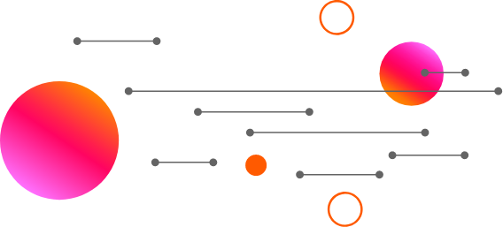

Fundamentación teórica
ClassDojo fue lanzado en agosto de 2011; desde agosto de 2012 la compañía ubicada en San Francisco, California, cuenta con más de 3,5 millones de maestros y estudiantes utilizando ClassDojo en más de 60 países. Inicialmente fundada por la incubadora de tecnología para la educación ubicada en Palo Alto ImagineK. ClassDojo obtuvo su capital de una serie de inversores incluyendo a Ron Conway, Mitch Kapor, Jeff Clavier, General Catalyst y Paul Graham.
ClassDojo fue lanzado en agosto de 2011; desde agosto de 2012 la compañía ubicada en San Francisco, California, cuenta con más de 3,5 millones de maestros y estudiantes utilizando ClassDojo en más de 60 países. Inicialmente fundada por la incubadora de tecnología para la educación ubicada en Palo Alto ImagineK. ClassDojo obtuvo su capital de una serie de inversores incluyendo a Ron Conway, Mitch Kapor, Jeff Clavier, General Catalyst y Paul Graham.
Sam Chaudhary y Liam Don cofundaron ClassDojo en el verano de 2011, lanzando una versión beta de la plataforma. Los cofundadores se trasladaron a California desde el Reino Unido. Tras un lanzamiento tranquilo en agosto de 2011, el crecimiento ha sido rápido, alcanzando a millones de maestros y estudiantes en más de 60 países en 18 meses. En 2012 anunció la recaudación de 1,6 millones de dólares de capital semilla otorgado por Paul Graham, Ron Conway, Jeff Clavier, Kapor Capital, Morado Ventures, Lerer Ventures, Start Fund y General Catalyst.
La compañía planea que su plataforma principal se mantenga gratuita para los maestros. Los fundadores dicen que es porque quieren que los maestros, estudiantes y padres en todo tipo de escuela puedan utilizar la aplicación para moldear mejores comportamientos para el aprendizaje y habilidades del carácter. Quieren lograr un impacto en la mayoría de los estudiantes que acuden a las escuelas públicas, donde los presupuestos son más ajustados.
Actualmente, existen múltiples aplicaciones, recursos web y nuevas metodologías que se pueden implantar dentro del ámbito educativo. Entre ellos podemos encontrar los entornos virtuales de aprendizaje (EVA), la WebQuest, los Podcasts, los blogs educativos y la metodología flipped classrooms entre otros. Por otro lado, cabe destacar que una gran parte de las instituciones educativas, entre las cuales se encuentra la UNED, utilizan los espacios virtuales de aprendizaje.
En este caso, la UNED al igual que otras instituciones educativas ofrece un entorno virtual de aprendizaje (Campus virtual) a través del cual el docente puede incluir contenidos, páginas web, actividades o crear cuestionarios para que el alumno realice, es decir, es un entorno en el cual la comunicación docente-alumno se encuentra activa y el docente puede evaluar al alumno.
La globalización es uno de los fenómenos históricos más destacables y representativo del presente. Es la superación de los limites espaciales, influyendo más allá de ellos. Antes de que aparecieran las Tecnologías de la información y la Comunicación (TIC). Según Moreira (2009) “Las TIC no son la causa del fenómeno de la globalización, sino que actúan como motores aceleradores de este proceso”.
Las tecnologías de la información y la comunicación tienen hoy en día una mayor presencia en todos los aspectos de la vida y como no esta siendo de mayor importancia en el ámbito educativo, donde la innovación crece constantemente y con ellos los cambiar, amenazas y oportunidades que experimentan los espacios sociales en el que se desenvuelven los individuos. Según Baena (2008).
Las nuevas tecnologías de la información y comunicación son aquellas herramientas computadoras e informáticas que procesas, almacenan, sintetizan, recuperan y presentan información representada de formas variadas. Es un conjunto de herramientas, soportes y canales para el tratamiento y acceso a la información. Constituyen nuevos soportes y canales para dar forma, registrar, almacenar y difundir contenidos informacionales. Algunos ejemplos de estas tecnologías son la pizarra digital, blogs, podcast y por supuesto la web.
Por qué buscar una metodología de uso de Internet en el aula es algo que todo docente que haya trabajado con sus alumnos el tema sabe: hay peligros. Paulino Tardáguila (Congreso de Tecnologías de la Información, Zamora 2002), enunció algunos:
- Generación de analfabetos funcionales: no se lee, no se piensa, no se tiene opinión.
- Ausencia de habilidades básicas: selección, análisis, interpretación y organización de la información: copia masiva de trabajos.
Él mismo aporta algunas ideas que pueden guiar la búsqueda de soluciones a estos problemas:
- Potenciar el acceso solamente a determinadas fuentes de información: profesor= facilitador de recursos, guía al alumno.
- Delimitar los fines que se persiguen con el acceso a la información: trabajo “previo” al acceso al ordenador.
- Diseñar otras actividades no realizables desde Internet: elaboración de resúmenes, interpretación de la información, etc.
Sin embargo, es imprescindible conocer algunas de las aportaciones pedagógicas dadas por diferentes autores del siglo XX que han influido notoriamente y se encuentran dentro de los diferentes recursos o plataformas digitales.
En primer lugar, se debe tener en cuenta las aportaciones de Carl Rogers las cuales derivan en el concepto de aprendizaje significativo, es decir, el docente no puede enseñar sus conocimientos puesto que el individuo aprenderá solo aquello que para él es útil y significativo. Otra aportación dada por Rogers consiste en crear ambientes facilitadores de aprendizaje para que el individuo pueda desarrollarse de forma adecuada. (Godinez, 2009) (Cacheiro González, Sánchez Romero, & González Lorenzo, 2015).